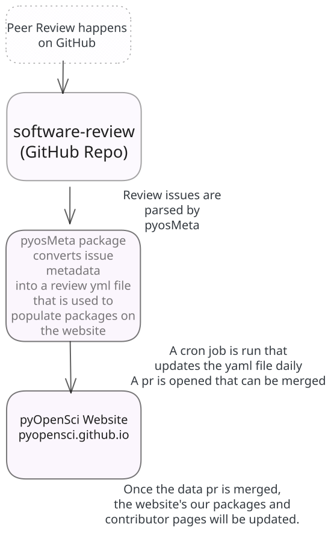
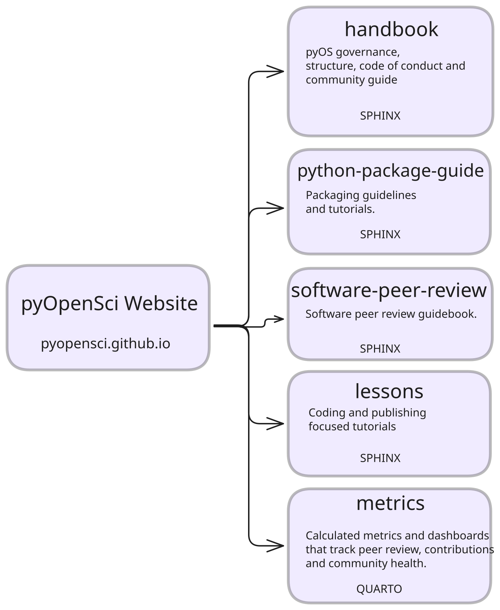

pyOpenSci Infrastructure#
pyOpenSci uses GitHub to manage almost all of its infrastructure, from community processes to website rendering. This page provides a high-level overview of our infrastructure, focusing on how our core repositories work together and contribute to the website and community operations.
For detailed information about specific infrastructure components, see the Learn more section below.
What is pyOpenSci infrastructure?#
pyOpenSci infrastructure encompasses:
GitHub repositories: All code, content, and documentation repositories
Website and documentation: Main website and sub-sites (handbook, guides, lessons)
Data processing: Automated collection and processing of contributor and peer review data
Continuous Integration (CI): GitHub Actions workflows for testing, building, and deploying
Access and permissions: Repository access management and team structures
Issue and pull request workflows: Processes for managing contributions and reviews
Infrastructure overview diagrams#
The diagrams below illustrate two key aspects of our infrastructure:
Data flow and processing#
The first diagram shows how peer review data is extracted from GitHub issues through our automated processing system to update the website:

pyOpenSci infrastructure data flow diagram showing how peer review issues are processed through pyosMeta to update the website.#
This diagram illustrates the automated workflow: peer review happens in GitHub issues, which are parsed by scripts in the pyosMeta package to generate YAML files that automatically update the website’s package and contributor pages.
Website structure#
The second diagram shows how the main pyOpenSci website connects to its sub-sites:

pyOpenSci website structure diagram showing the main website and its sub-sites (Handbook, Python Package Guide, Software Peer Review Guide, Lessons, and Metrics).#
All sub-sites are built separately but served under the pyopensci.org domain, with the main website (pyopensci.github.io) serving as the central hub.
Data flow and continuous integration#
In simple terms: pyOpenSci uses automated workflows to collect data from GitHub and automatically update our website.
pyOpenSci uses a set of Continuous Integration (CI) jobs (GitHub Actions) to:
Collect data from our open peer review process
Collect contributor data from across all of our GitHub repositories
The pyosMeta package is a Python package that parses review and contributor data and transforms it into machine-readable YAML files used by our website.
How data flows through our system#
pyosMetaparses the Markdown data within review issues in thesoftware-reviewGitHub repository. It:Gathers review editors, reviewers, and maintainers’ GitHub usernames, and uses the GitHub API to retrieve contributor names, emails, and other public GitHub profile information
Extracts the GitHub URL of each reviewed package and retrieves basic repository statistics (number of forks, stars, contributors)
Stores this peer review information in
packages.yml
pyosMetaalso parses contributor data from across all pyOpenSci repositories. It:Parses
all-contributorsbot files to compile a list of contributors and their associated repositories/projectsParses peer review metadata to populate roles such as reviewers, editors, and other contributor roles within our organization
Stores this contributor information in
contributors.yml
The
packages.ymlandcontributors.ymlfiles generated bypyosMetaare updated daily via a GitHub Action cron job in thepyopensci.github.iorepository. This data is used to populate:The Our Community page
The Packages page
For more detailed information about data collection and processing, see the Data Workflows page.
Website publishing#
The Python Package Guide, Peer Review Guide, and Handbook are all Sphinx books that use the
pydata_sphinx_theme. These books are built separately but are served under thepyopensci.orgdomain.All Sphinx books use the
pyos-sphinx-theme, which is a Sphinx theme built on top ofpydata_sphinx_theme.The final site is published at pyopensci.org using GitHub Pages.
Learn more#
This page provides a high-level overview. For detailed information about specific infrastructure components, see:
All repositories: Complete list and description of all pyOpenSci GitHub repositories
Data workflows: Detailed information about data collection and processing
Continuous Integration: CI/CD workflows and GitHub Actions
Permissions: Repository access management and team structures
Pull requests: How to work with pull requests in pyOpenSci repos
Issues: Issue management and labeling workflows